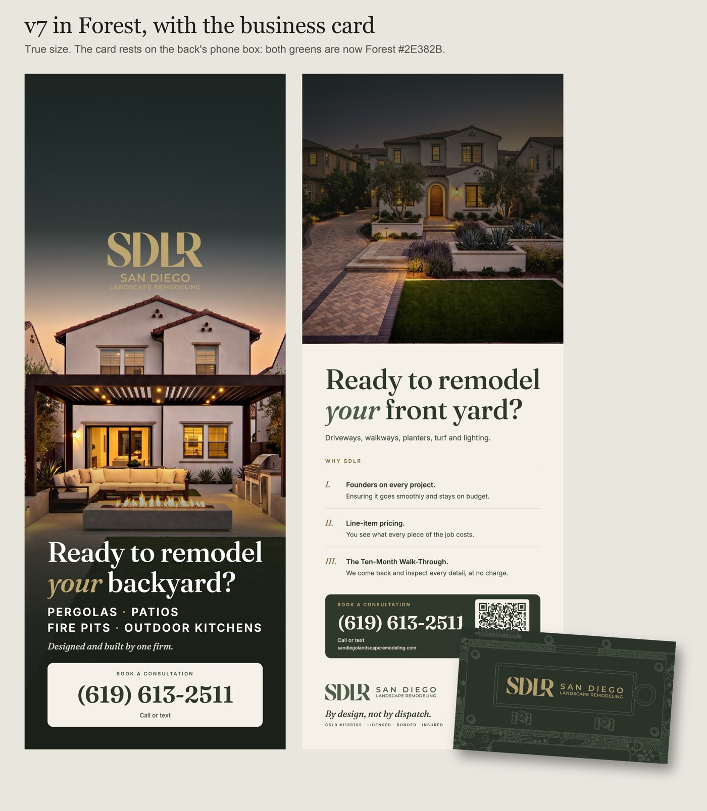
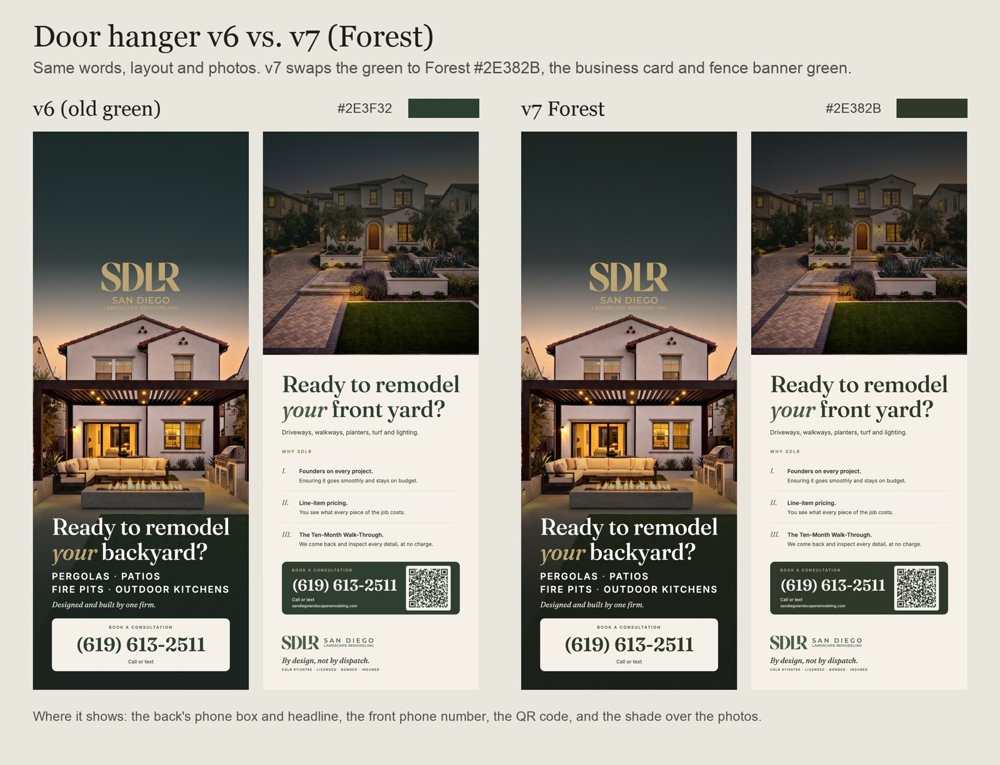
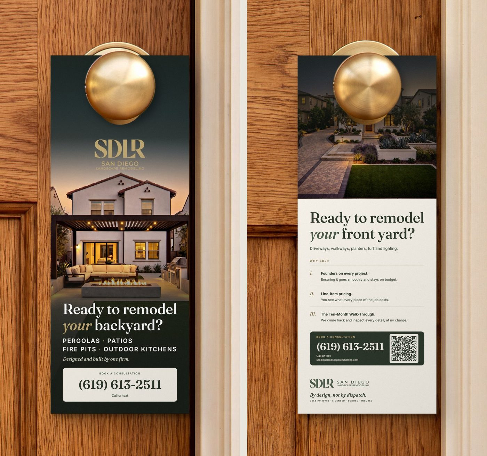
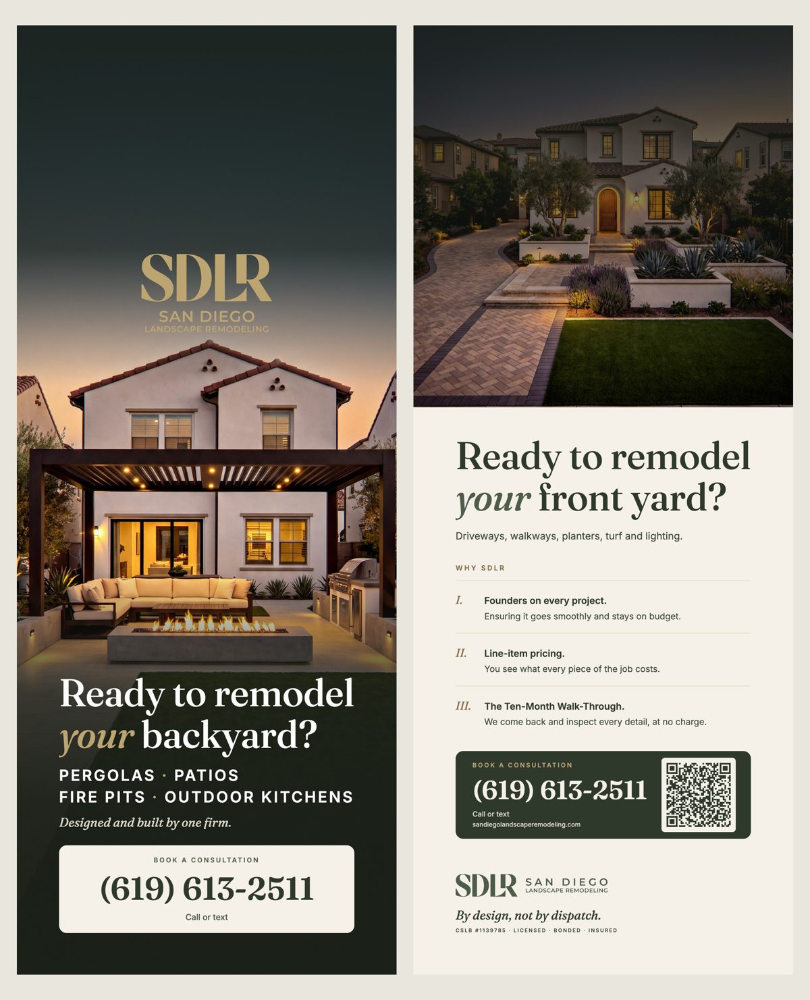

San Diego Landscape Remodeling · Door hanger · Version 7 · Final, approved November 22, 2026
One green: Forest
Gio picked one green for all SDLR print: Forest #2E382B, the green on the business card and the fence banner (brand guide v1.4).
Version 6 used #2E3F32, a hair lighter and bluer, and the difference showed where the card met the hanger's phone box. Version 7 is version 6 in Forest. The words, layout and photos are the same.

True size: the business card rests on the back's phone box, and both are now the same Forest green.

Version 6 (#2E3F32) next to version 7 (Forest #2E382B).
What changed
Forest #2E382B everywhere v6 used #2E3F32: the back's phone box and headline, the front phone number, the QR code, and the "SDLR Forest" global swatch in the Illustrator file.
The shade over the photos was re-derived from Forest (#1C2620 became #1C211A), so it stays in the same green family.
Contrast improves slightly: cream on Forest is 8.6:1 (was 7.9:1), and gold on Forest is 5.1:1 (was 4.7:1).
Everything else is version 6: Gio's wording, the big capitals on the front, and GotPrint's angled slit.

Front (backyard at dusk) and back (front yard over cream) on a door.

Flat, front and back, 4.25 × 11 in. Native layered Illustrator file (global "SDLR Forest" swatch, live type, vector logo) and an outlined CMYK printer PDF.